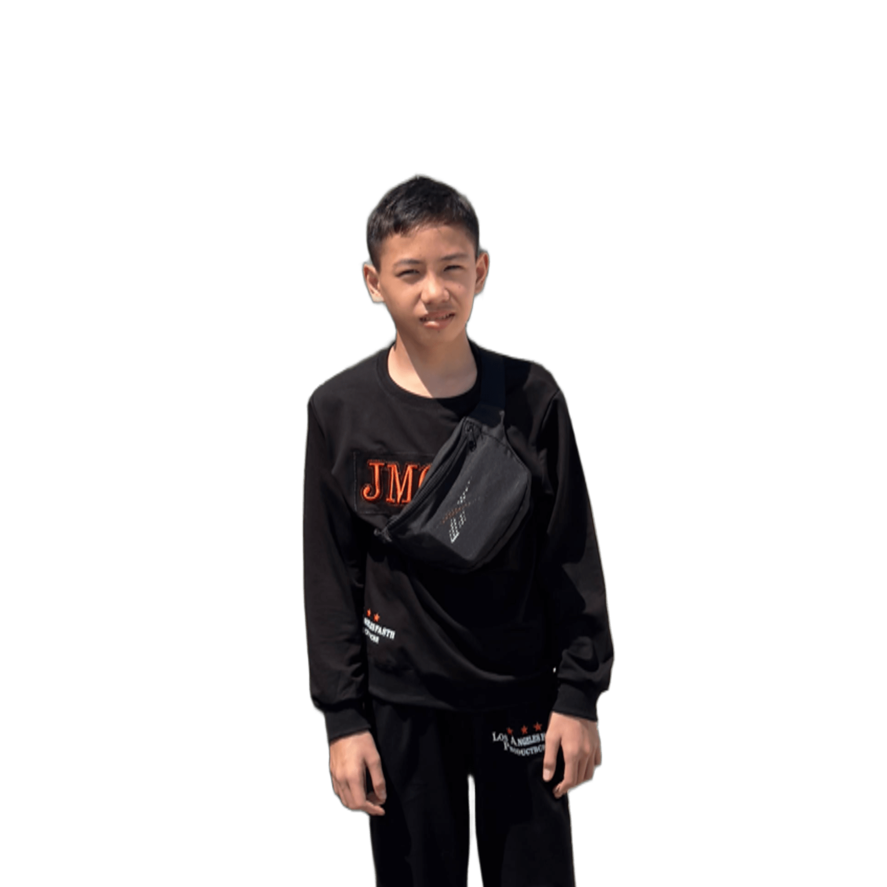

About Me
Nama saya adalah Gilang Sandi, saya lahir di Pekanbaru, Riau, Indonesia pada 29 Januari 2010. Saya gemar melakukan dan mencoba hal baru yang nantinya akan berguna. Saya mulai mengenal Coding saat usia 12 tahun, dimana pada awalnya hanya bermain Bot Whatsapp! Hobi saya lainnya seperti desain, video edit dan dunia digital lainnya.
Skills
